library(tidyverse)
library(excessmort)
library(kableExtra)
library(lubridate)
library(MASS)
library(pdftools)biostats620_final_project
Packages Used
Question 1: Population Sizes by Age Group and Sex
dat <- puerto_rico_counts
#marginal counts, we may want to collapse some of these (maybe into 10 yr bins?)
t1 <- dat %>%
group_by(agegroup, sex) %>%
summarize(count = mean(population), .groups = "drop") %>%
pivot_wider(names_from = sex, values_from = count, values_fill = 0)
kable(t1)| agegroup | female | male |
|---|---|---|
| 0-4 | 118886.60 | 124166.89 |
| 5-9 | 128338.20 | 134027.91 |
| 10-14 | 137254.48 | 142834.59 |
| 15-19 | 140546.33 | 145330.13 |
| 20-24 | 136900.96 | 135803.44 |
| 25-29 | 129586.13 | 122670.16 |
| 30-34 | 124736.05 | 114279.74 |
| 35-39 | 123391.99 | 110548.18 |
| 40-44 | 122339.68 | 108089.43 |
| 45-49 | 116511.76 | 102230.66 |
| 50-54 | 111973.38 | 96919.54 |
| 55-59 | 104562.71 | 89331.28 |
| 60-64 | 94151.71 | 80090.52 |
| 65-69 | 82889.24 | 69814.59 |
| 70-74 | 67546.00 | 55648.71 |
| 75-79 | 52283.22 | 41288.09 |
| 80-84 | 35543.43 | 26154.14 |
| 85-Inf | 34932.77 | 21848.33 |
#stratified plots
dat %>% ggplot(aes(date, population)) +
geom_line(aes(color = agegroup)) +
facet_wrap(~sex) +
labs(title = "Population Size by Age Group and Gender",
x = "Year",
y = "Population",
color = "Age Group") 
weekly_deaths <- dat %>%
filter(year(date) < 2017) %>%
mutate(mmwr_week = epiweek(date),
mmwr_year = epiyear(date)) %>%
group_by(agegroup, sex, mmwr_week, mmwr_year) %>%
summarise(total_deaths = sum(outcome, na.rm = TRUE), population = mean(population)) %>%
ungroup()`summarise()` has grouped output by 'agegroup', 'sex', 'mmwr_week'. You can
override using the `.groups` argument.#adding a plot to comment on why older folks are sticking around longer
weekly_deaths |>
filter(mmwr_year < 2017) |>
group_by(mmwr_year) %>%
summarize(mortality = mean(total_deaths/population)*1000, year = mmwr_year) %>%
ggplot(aes(x=year, y= mortality)) +
geom_line(color = 'blue') +
labs(title = "Yearly Mortality Rates (per 1,000): 2002-2016",
x = "Year",
y = "Rate")`summarise()` has grouped output by 'mmwr_year'. You can override using the
`.groups` argument.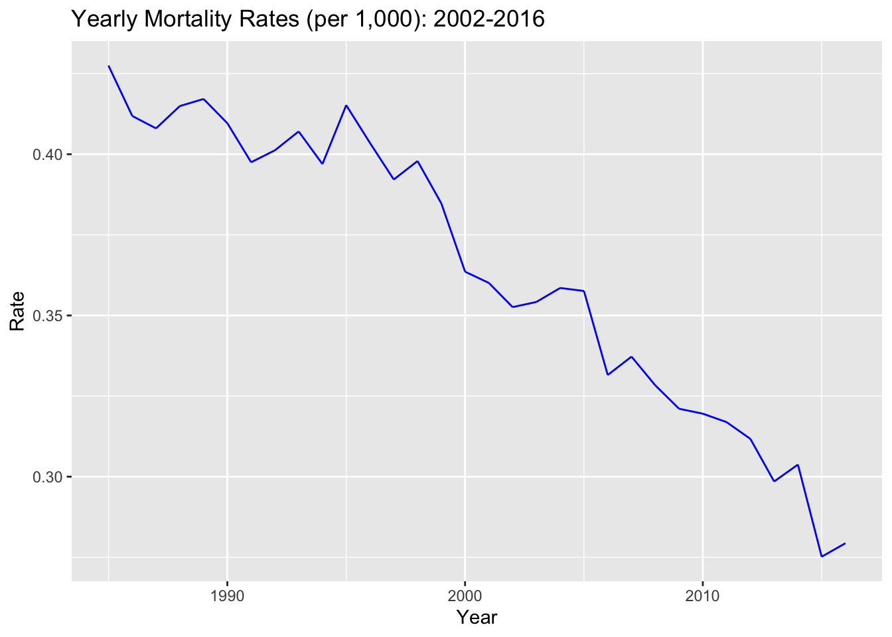
Considering the population size of Puerto Rico from 1985 to 2022, we see differing trends across age groups. For both males and females, the population size for older age groups is increasing, while younger age groups are decreasing. We see this particularly in the 0-4 age group for both sexes.
When examining the general trend in mortality rates over time, we see a decrease from 1985 to 2016. This could help to explain why we see increased population sizes for older age groups, potentially due to healthier lifestyles and improvements in medical care access and quality.
Question 2: Expected mortality Before 2017
t2 <- weekly_deaths %>%
# looking at trends/ estimate what a typical week looks like across years
group_by(mmwr_week, agegroup, sex) %>%
summarise(mean_deaths = mean(total_deaths),
sd = sd(total_deaths)) %>%
ungroup() `summarise()` has grouped output by 'mmwr_week', 'agegroup'. You can override
using the `.groups` argument.kable(head(t2, 10))| mmwr_week | agegroup | sex | mean_deaths | sd |
|---|---|---|---|---|
| 1 | 0-4 | female | 6.09375 | 2.8438885 |
| 1 | 0-4 | male | 7.15625 | 4.5302523 |
| 1 | 5-9 | female | 0.50000 | 0.8424235 |
| 1 | 5-9 | male | 0.59375 | 0.8370214 |
| 1 | 10-14 | female | 0.56250 | 0.8775883 |
| 1 | 10-14 | male | 0.90625 | 0.8175248 |
| 1 | 15-19 | female | 0.96875 | 1.2822454 |
| 1 | 15-19 | male | 3.53125 | 1.8136467 |
| 1 | 20-24 | female | 1.40625 | 1.2406911 |
| 1 | 20-24 | male | 6.40625 | 2.3808290 |
# some age groups have similar trends
t2 %>%
ggplot(aes(x = mmwr_week, y = mean_deaths, color = sex)) +
geom_line() +
geom_ribbon(aes(ymin = mean_deaths - sd,
ymax = mean_deaths + sd,
fill = sex), alpha = 0.2, color = NA) +
facet_wrap(~ agegroup, scales = "free_y")
# creating a df with larger age groups
new_dat <- dat %>%
mutate(mmwr_week = epiweek(date),
mmwr_year = epiyear(date),
agegroup_new = case_when(
agegroup %in% c("0-4", "5-9", "10-14", "15-19", "20-24") ~ "0-24",
agegroup %in% c("25-29", "30-34", "35-39", "40-44", "45-49",
"50-54", "55-59", "60-64") ~ "25-64",
agegroup %in% c("65-69", "70-74", "75-79", "80-84") ~ "65-84",
agegroup == "85-Inf" ~ "85+")) %>%
group_by(agegroup_new, sex, mmwr_week, mmwr_year) %>%
summarise(total_deaths = sum(outcome, na.rm = TRUE), population = mean(population)) %>%
ungroup()`summarise()` has grouped output by 'agegroup_new', 'sex', 'mmwr_week'. You can
override using the `.groups` argument.t3 <- new_dat %>%
# looking at trends/ estimate what a typical week looks like across years
group_by(mmwr_week, agegroup_new, sex) %>%
summarise(mean_deaths = mean(total_deaths),
sd = sd(total_deaths)) %>%
ungroup() `summarise()` has grouped output by 'mmwr_week', 'agegroup_new'. You can
override using the `.groups` argument.kable(head(t3, 10))| mmwr_week | agegroup_new | sex | mean_deaths | sd |
|---|---|---|---|---|
| 1 | 0-24 | female | 8.736842 | 4.195778 |
| 1 | 0-24 | male | 17.000000 | 7.128170 |
| 1 | 25-64 | female | 50.631579 | 7.290946 |
| 1 | 25-64 | male | 108.236842 | 18.397171 |
| 1 | 65-84 | female | 113.763158 | 20.674353 |
| 1 | 65-84 | male | 141.921053 | 26.324772 |
| 1 | 85+ | female | 80.078947 | 26.970837 |
| 1 | 85+ | male | 60.921053 | 21.364762 |
| 2 | 0-24 | female | 9.289474 | 5.598783 |
| 2 | 0-24 | male | 18.500000 | 9.146702 |
t3 %>%
ggplot(aes(x = mmwr_week, y = mean_deaths, color = sex)) +
geom_line() +
geom_ribbon(aes(ymin = mean_deaths - sd,
ymax = mean_deaths + sd,
fill = sex), alpha = 0.2, color = NA) +
facet_wrap(~ agegroup_new, scales = "free_y")
Linear Model:
# pre-2017 data
model_dataset <- new_dat %>%
filter(mmwr_year < 2017) %>%
mutate(rate = total_deaths/population,
age = as.factor(agegroup_new))
# linear model fit on data before 2017
linear <- lm(rate ~ population + mmwr_week + age + sex, data = model_dataset)
summary(linear)
Call:
lm(formula = rate ~ population + mmwr_week + age + sex, data = model_dataset)
Residuals:
Min 1Q Median 3Q Max
-1.630e-03 -2.093e-04 -4.560e-06 1.816e-04 1.846e-03
Coefficients:
Estimate Std. Error t value Pr(>|t|)
(Intercept) 1.739e-03 3.805e-05 45.71 <2e-16 ***
population -1.258e-08 2.525e-10 -49.83 <2e-16 ***
mmwr_week -2.074e-06 2.001e-07 -10.36 <2e-16 ***
age25-64 1.975e-04 1.186e-05 16.65 <2e-16 ***
age65-84 1.262e-03 2.506e-05 50.35 <2e-16 ***
age85+ 1.067e-03 3.112e-05 34.28 <2e-16 ***
sexmale 4.230e-04 6.321e-06 66.92 <2e-16 ***
---
Signif. codes: 0 '***' 0.001 '**' 0.01 '*' 0.05 '.' 0.1 ' ' 1
Residual standard error: 0.0003484 on 13353 degrees of freedom
Multiple R-squared: 0.917, Adjusted R-squared: 0.917
F-statistic: 2.46e+04 on 6 and 13353 DF, p-value: < 2.2e-16# check if there are negative fitted values
perc_negative <- mean(linear$fitted.values < 0)
perc_negative[1] 0.08787425Linear Model Diagnostics
# plot(linear, which = 1)
# plot(linear, which = 2)
resids <- residuals(linear)
# QQ plot
ggplot(data.frame(residuals = resids), aes(sample = residuals)) +
stat_qq(size = 1.5, color = "darkblue", alpha = 0.6) +
stat_qq_line(color = "orange", size = 1) +
labs(title = "Normal Q-Q Plot of Model Residuals",
x = "Theoretical Quantiles",
y = "Sample Quantiles") +
theme_minimal()Warning: Using `size` aesthetic for lines was deprecated in ggplot2 3.4.0.
ℹ Please use `linewidth` instead.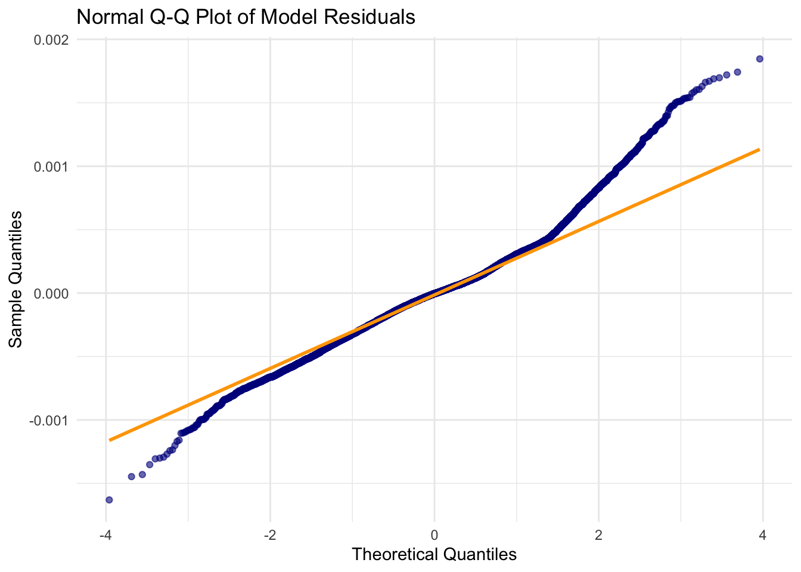
# Residuals vs Fitted Plot
model_df <- data.frame(
fitted = fitted(linear),
residuals = residuals(linear)
)
ggplot(model_df, aes(x = fitted, y = residuals)) +
geom_point(alpha = 0.4, color = "darkblue", size = 1.5) +
geom_hline(yintercept = 0, color = "indianred") +
geom_smooth(method = "loess", se = FALSE, color = "orange", linetype = "solid") +
labs(title = "Residuals vs Fitted Values",
x = "Fitted Values",
y = "Residuals") +
theme_minimal()`geom_smooth()` using formula = 'y ~ x'
Fitting a linear model, we see issues such as violations of homoskedasticity (funnel shape) and normality (tails of qq plot). We also see negative predictions for a non-negative outcome (rate).
Log-Linear Model:
#do we need year for both plots? or should we limit year?
log_linear <- glm(total_deaths ~ mmwr_week + agegroup_new + sex,
offset = log(population),
family = poisson,
data = new_dat)
summary(log_linear)
Call:
glm(formula = total_deaths ~ mmwr_week + agegroup_new + sex,
family = poisson, data = new_dat, offset = log(population))
Deviance Residuals:
Min 1Q Median 3Q Max
-8.5235 -1.4753 -0.1232 1.3931 9.0833
Coefficients:
Estimate Std. Error z value Pr(>|z|)
(Intercept) -9.536e+00 4.939e-03 -1930.96 <2e-16 ***
mmwr_week -8.830e-04 6.339e-05 -13.93 <2e-16 ***
agegroup_new25-64 1.997e+00 4.854e-03 411.46 <2e-16 ***
agegroup_new65-84 3.227e+00 4.712e-03 684.89 <2e-16 ***
agegroup_new85+ 3.298e+00 4.893e-03 673.92 <2e-16 ***
sexmale 4.901e-01 1.930e-03 253.97 <2e-16 ***
---
Signif. codes: 0 '***' 0.001 '**' 0.01 '*' 0.05 '.' 0.1 ' ' 1
(Dispersion parameter for poisson family taken to be 1)
Null deviance: 1291638 on 15863 degrees of freedom
Residual deviance: 66290 on 15858 degrees of freedom
AIC: 156826
Number of Fisher Scoring iterations: 4#GOF: prob of observing this deviance value given the df
1-pchisq(log_linear$deviance, log_linear$df.residual)[1] 0We next fit a log-linear model with mmwr_week, age, and sex again as predictors. We again seek to predict weekly death rate, this time modeling total deaths and using an offset equal to population size for a given week, gender, age, and year. Univariate Wald tests show that each coefficient is significantly associated with our outcome of interest, and a comparison of null and residual deviances shows that our model fits significantly better than the intercept-only model (LRT: 1225348 on 5 degrees of freedom).
Goodness of Fit: Under the null, the residual deviance should be distributed as a \(X^2\) random variable with degrees of freedom equal to the model’s residual degrees of freedom, 15858. We observe a residual deviance value of 66290. The probability of observing such a residual deviance value given that the fit model holds is essentially zero, indicating a lack of model fit.
####Assessing for Overdispersion:
#gaps in chart again?
plot(log_linear, which = 3)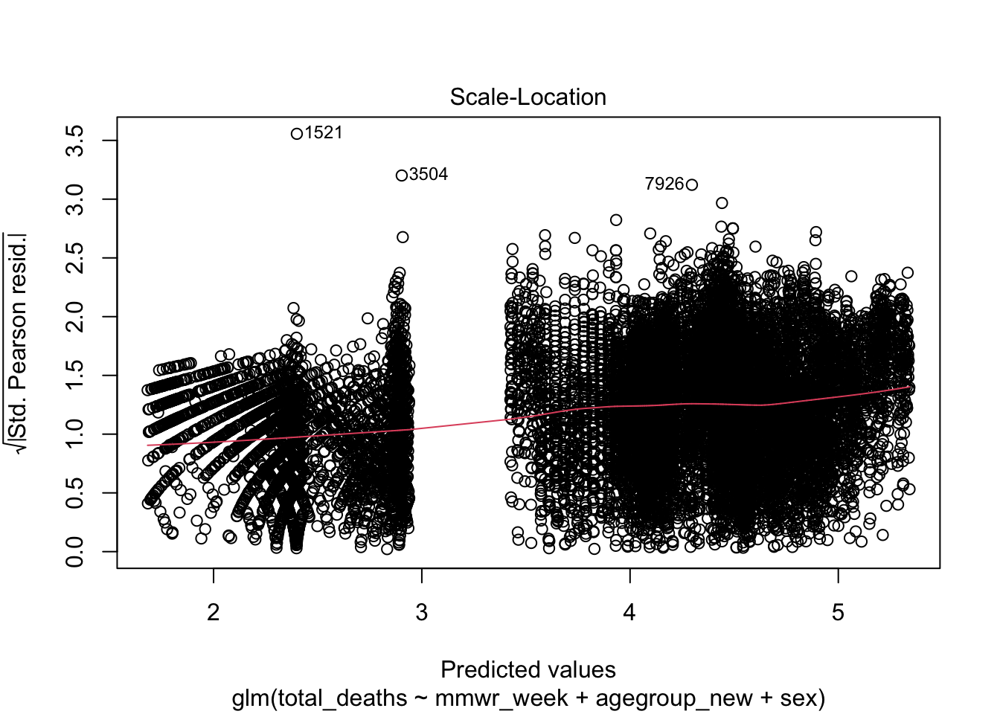
overdisp <- log_linear$deviance/log_linear$df.residual
overdisp[1] 4.180209There is an upward trend in the scale-location plot for predicted values vs standardized pearson residuals. In a well-fitting model, the ratio of residual deviance to the degrees of freedom should be approximately 1 since the poisson distribution assumes that the mean and variance are exactly equal. In this case, the ratio value is 4.18 indicating that overdispersion is present and that we may be underestimating the standard error of our data.
Negative Binomial Regression:
neg_bin <- glm.nb(total_deaths ~ mmwr_week + agegroup_new + sex + agegroup_new*sex + offset(log(population)),
link = log,
data = new_dat)
summary(neg_bin)
Call:
glm.nb(formula = total_deaths ~ mmwr_week + agegroup_new + sex +
agegroup_new * sex + offset(log(population)), data = new_dat,
link = log, init.theta = 35.85585564)
Deviance Residuals:
Min 1Q Median 3Q Max
-3.8543 -0.7722 -0.0387 0.6543 8.0774
Coefficients:
Estimate Std. Error z value Pr(>|z|)
(Intercept) -9.7259535 0.0094328 -1031.080 < 2e-16 ***
mmwr_week -0.0007770 0.0001159 -6.702 2.06e-11 ***
agegroup_new25-64 1.9363082 0.0102198 189.466 < 2e-16 ***
agegroup_new65-84 3.4877853 0.0099172 351.692 < 2e-16 ***
agegroup_new85+ 3.6740929 0.0100350 366.126 < 2e-16 ***
sexmale 0.7606957 0.0111159 68.433 < 2e-16 ***
agegroup_new25-64:sexmale 0.1212304 0.0129411 9.368 < 2e-16 ***
agegroup_new65-84:sexmale -0.3432639 0.0126542 -27.127 < 2e-16 ***
agegroup_new85+:sexmale -0.6036123 0.0129586 -46.580 < 2e-16 ***
---
Signif. codes: 0 '***' 0.001 '**' 0.01 '*' 0.05 '.' 0.1 ' ' 1
(Dispersion parameter for Negative Binomial(35.8559) family taken to be 1)
Null deviance: 465078 on 15863 degrees of freedom
Residual deviance: 16598 on 15855 degrees of freedom
AIC: 122573
Number of Fisher Scoring iterations: 1
Theta: 35.856
Std. Err.: 0.648
2 x log-likelihood: -122552.939 1-pchisq(neg_bin$deviance, neg_bin$df.residual)[1] 1.940181e-05Comparing this model with the log-linear model on AIC, we conclude that the negative binomial model fits better given its lower AIC value (156826 vs 122573). However, the probability of observing such a residual deviance value given that the fit model holds is still very low (p = 1.940181e-05), indicating a lack of model fit despite improvements.
Check for Autocorrelation:
#can do a correlation heat map here to justify hierarchical modelExpected Mortality by Week with Standard Deviations:
Question 3: Periods with Excess Mortality Before 2018
Linear Model
# Looking only at data before 20178
predict_pre <- new_dat %>%
filter(mmwr_year <= 2017) %>%
arrange(mmwr_year, mmwr_week) %>%
mutate(rate = total_deaths/population,
age = as.factor(agegroup_new),
week_index = row_number())
# getting predictions
predict_pre$predicted_rate <- predict(linear, newdata = predict_pre)
# excess mortality (obs - predicted)
predict_pre <- predict_pre %>%
mutate(predicted_deaths = predicted_rate * population,
excess_mortality = rate - predicted_rate,
excess_deaths = total_deaths - predicted_deaths)
#observed v fitted over time: looking at sex differences
predict_pre %>% ggplot(aes(x = week_index, y = excess_mortality)) +
geom_smooth(aes(color = sex, group = sex), method = "loess", se = FALSE, span = 0.1) +
labs(title = "Excess Mortality over Time: Before 2018",
subtitle = "Differences by Sex",
x = "Week", y = "Excess Mortality",
color = 'Sex') +
theme_minimal()`geom_smooth()` using formula = 'y ~ x'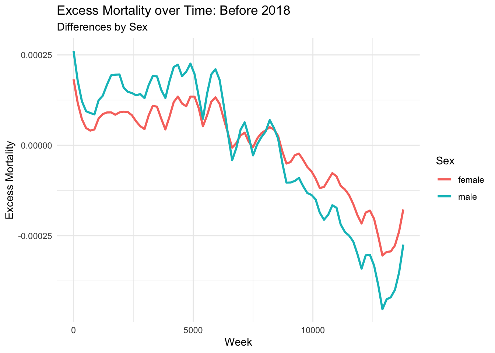
predict_pre %>% ggplot(aes(x = week_index, y = excess_mortality)) +
geom_smooth(aes(color = agegroup_new, group = agegroup_new), method = "loess", se = FALSE, span = 0.1) +
labs(title = "Excess Mortality over Time: Before 2019",
subtitle = 'Differences by Age Group',
x = "Week", y = "Excess Mortality",
color = 'Age Group') +
theme_minimal()`geom_smooth()` using formula = 'y ~ x'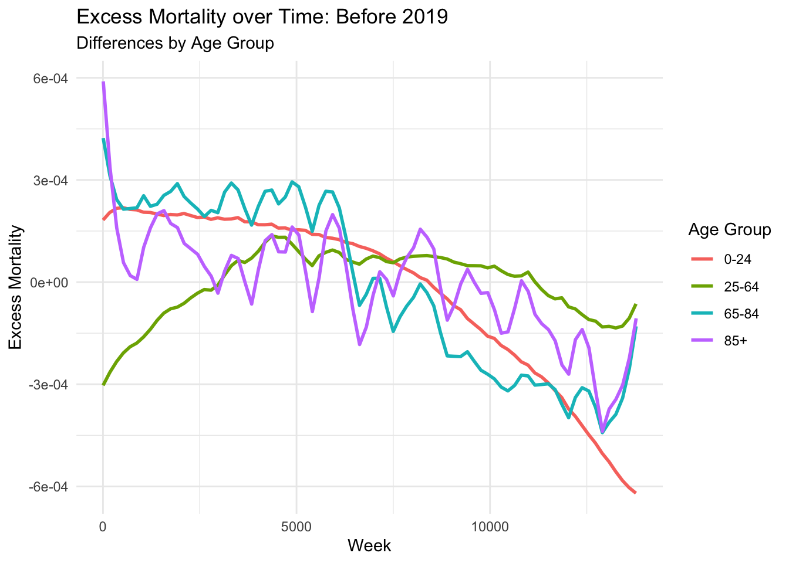
Negative Binomial Model
# Looking only at data before 2018
predictnb_pre <- new_dat %>%
filter(mmwr_year <= 2017) %>%
arrange(mmwr_year, mmwr_week) %>%
mutate(rate = total_deaths/population,
age = as.factor(agegroup_new),
week_index = row_number())
# use nb model to predict rates for data before 2018
predictnb_pre$predicted_rate <- predict(neg_bin, type = 'response', newdata = predictnb_pre) / predictnb_pre$population
# excess mortality (obs - predicted)
predictnb_pre <- predictnb_pre %>%
mutate(true_rate = total_deaths/population,
excess_mortality = true_rate - predicted_rate)
#observed v fitted over time: looking at sex differences
predictnb_pre %>% ggplot(aes(x = week_index, y = excess_mortality)) +
geom_smooth(aes(color = sex, group = sex), method = "loess", se = FALSE, span = 0.1) +
labs(title = "Excess Mortality over Time: Before 2018",
subtitle = "Differences by Sex",
x = "Week", y = "Excess Mortality",
color = 'Sex')+
theme_minimal()`geom_smooth()` using formula = 'y ~ x'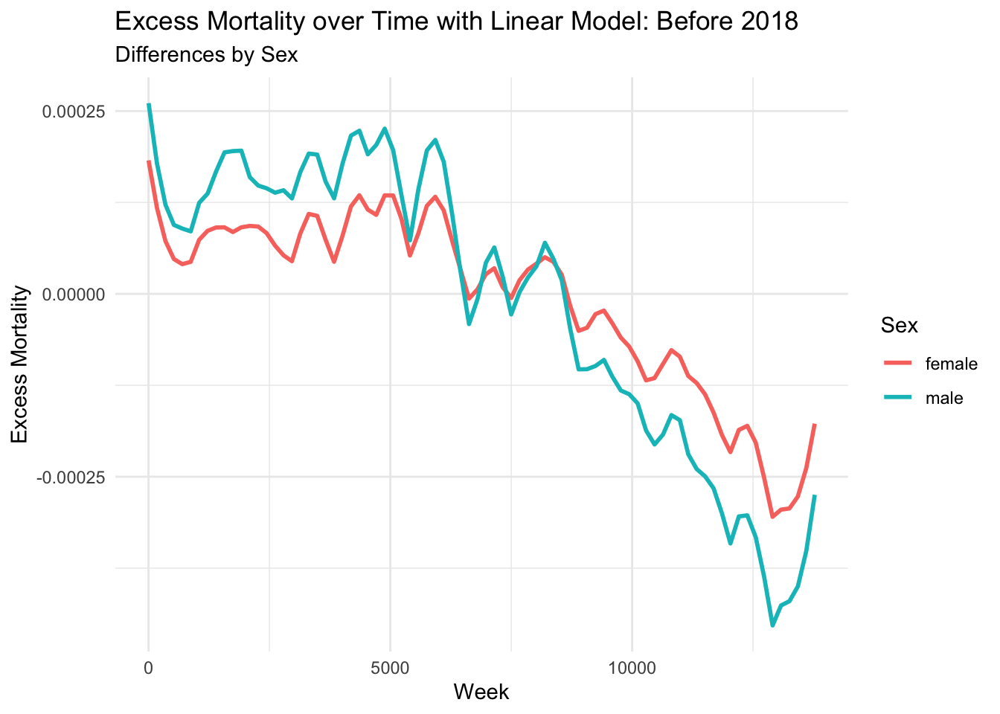
predictnb_pre %>% ggplot(aes(x = week_index, y = excess_mortality)) +
geom_smooth(aes(color = agegroup_new, group = agegroup_new), method = "loess", se = FALSE, span = 0.1) +
labs(title = "Excess Mortality over Time: Before 2019",
subtitle = 'Differences by Age Group',
x = "Week", y = "Excess Mortality",
color = 'Age Group') +
theme_minimal()`geom_smooth()` using formula = 'y ~ x'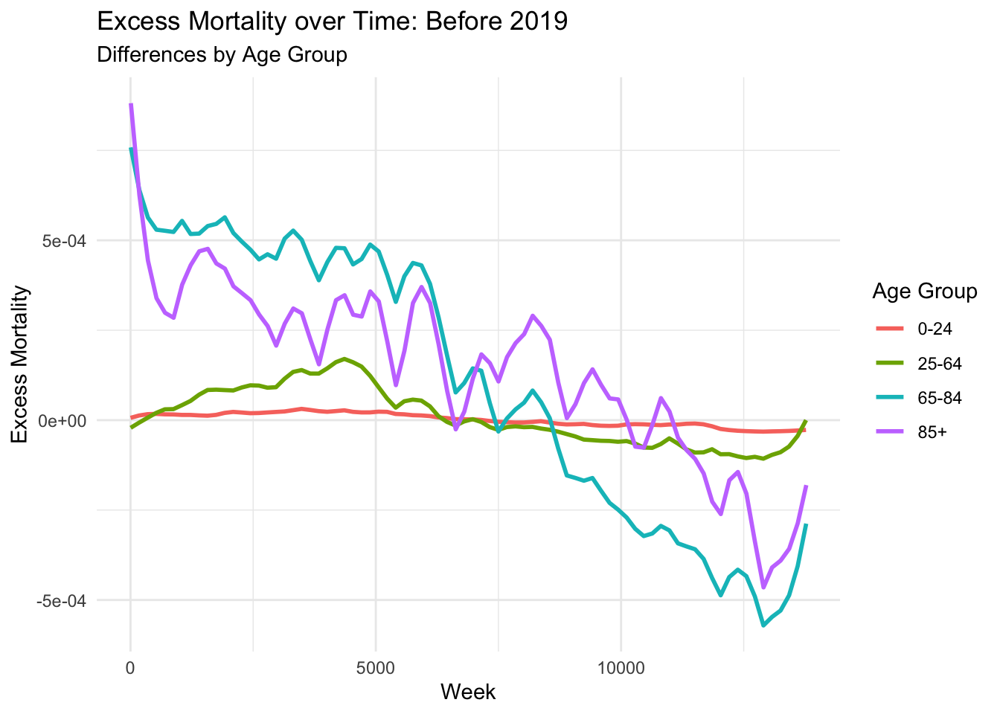
Based on the predictions from the linear and negative binomial models, there appears to be excess mortality in the year 1985. This is particularly seen in older age demographics.
Question 4: Predictions for 2017-2018
Linear Prediction
# 2017-2018 data used for prediction
predict_dataset <- new_dat %>%
filter(mmwr_year >= 2017 & mmwr_year <= 2018) %>%
mutate(rate = total_deaths/population,
age = as.factor(agegroup_new))
# use linear model to predict data 2017 and after
predict_dataset$predicted_rate <- predict(linear, newdata = predict_dataset)
# excess mortality (obs - predicted)
predict_dataset <- predict_dataset %>%
mutate(predicted_deaths = predicted_rate * population,
excess_mortality = rate - predicted_rate,
excess_deaths = total_deaths - predicted_deaths)
# comparing true vs expected predicted rate (excess mortality)
predict_dataset <- predict_dataset %>%
mutate(mmwr_label = paste0(mmwr_year, "-W", stringr::str_pad(mmwr_week, 2, pad = "0")))
# observed vs fitted plots
ggplot(predict_dataset, aes(x = rate, y = predicted_rate, color = agegroup_new)) +
geom_point(alpha = 0.5) +
geom_abline(intercept = 0, slope = 1, color = "red", size = 0.8) +
labs(title = "Observed vs Predicted Mortality Rate",
x = "Observed Rate", y = "Predicted Rate",
color = 'Age Group') +
theme_minimal()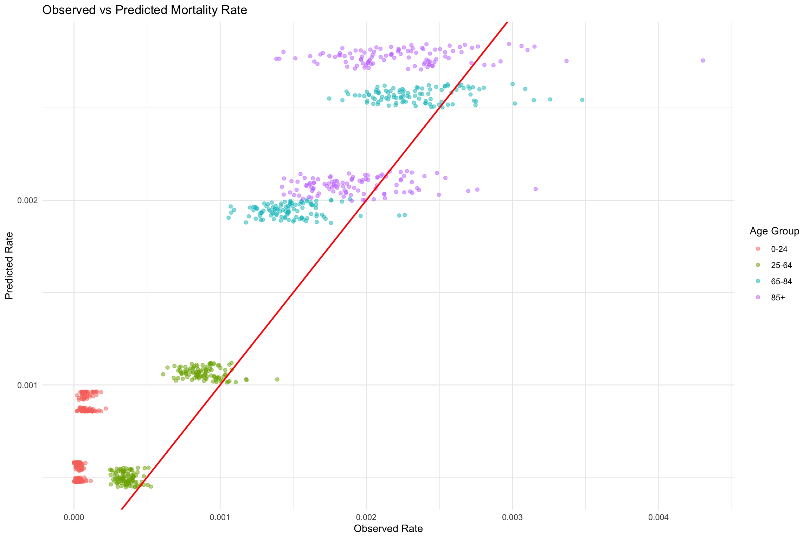
# plot of excess mortality over weeks
plot_df <- predict_dataset %>%
arrange(mmwr_year, mmwr_week) %>%
mutate(week_index = row_number()) %>%
dplyr::select(week_index, rate, predicted_rate, sex, agegroup_new) %>%
pivot_longer(cols = c("rate", "predicted_rate"),
names_to = "type",
values_to = "mortality_rate")
ggplot(plot_df, aes(x = week_index, y = mortality_rate, color = type)) +
geom_point(size = 0.7, alpha = 0.5) +
facet_grid(sex ~ agegroup_new) +
labs(title = "Observed vs. Predicted Mortality by Age Group and Sex",
y = "Mortality Rate",
x = "Week Index") +
theme_minimal()
In addition to the model violating the linear model assumptions, we can see that the model does not predict well and a better suited model should be used. From the Predicted vs Observed Rates plot, we can see that for the most part, the linear model is overestimating the actual mortality rate. There seems to be more week to week variation in actual mortality for the 65-84 and 85+ age groups which the model is also not fully capturing.
Negative Binomal Prediction:
# 2017-2018 data used for prediction
predict_nb <- new_dat %>%
filter(mmwr_year >= 2017 & mmwr_year <= 2018) %>%
mutate(age = as.factor(agegroup_new))
# use nb model to predict data 2017 and after
predict_nb$predicted_rate <- predict(neg_bin, type = 'response', newdata = predict_nb) / predict_nb$population
# excess mortality (obs - predicted)
predict_nb <- predict_nb %>%
mutate(true_rate = total_deaths/population,
excess_mortality = true_rate - predicted_rate)
# comparing true vs expected predicted rate (excess mortality)
predict_nb <- predict_nb %>%
mutate(mmwr_label = paste0(mmwr_year, "-W", stringr::str_pad(mmwr_week, 2, pad = "0")))
# observed vs fitted plots
ggplot(predict_nb, aes(x = true_rate, y = predicted_rate, color = agegroup_new)) +
geom_point(alpha = 0.5) +
geom_abline(intercept = 0, slope = 1, color = "red", size = 0.8) +
labs(title = "Observed vs Predicted Mortality Rate: Negative Binomial Model",
x = "Observed Rate", y = "Predicted Rate",
color = 'Age Group') +
theme_minimal()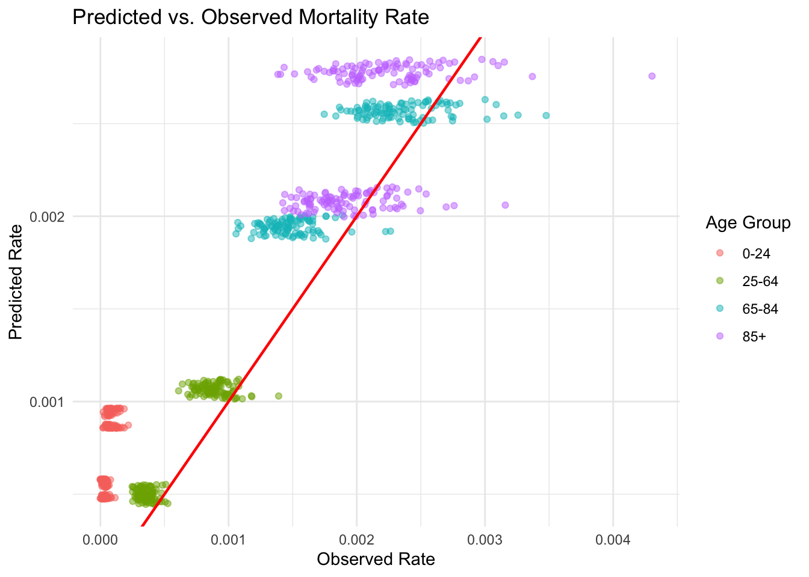
Excess Mortality over Time
#observed v fitted over time: looking at sex differences
predict_nb %>% ggplot(aes(x = mmwr_week, y = excess_mortality)) +
geom_smooth(aes(color = sex, group = sex), method = "loess", se = FALSE, span = 0.2) +
facet_wrap(~mmwr_year) +
labs(title = "Excess Mortality over Time: Negative Binomial Model",
subtitle = "Differences in Excess Mortality by Sex",
x = "Week", y = "Excess Mortality",
color = 'Sex') +
theme_minimal()`geom_smooth()` using formula = 'y ~ x'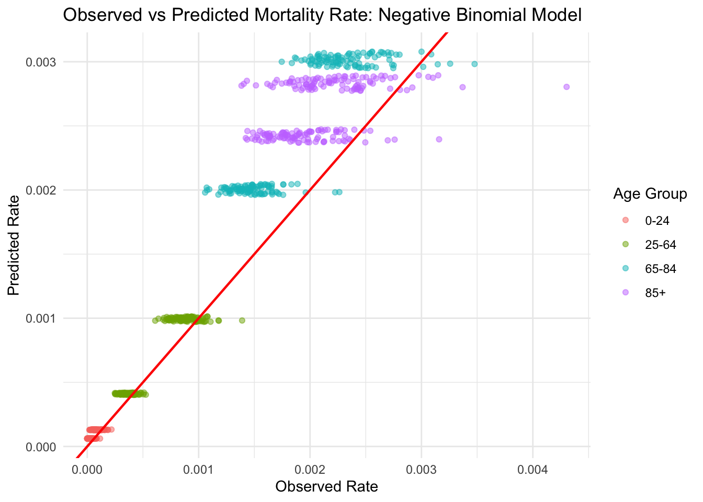
#observed v fitted over time: looking at age group differences
predict_nb %>% ggplot(aes(x = mmwr_week, y = excess_mortality)) +
geom_smooth(aes(color = agegroup_new, group = agegroup_new), method = "loess", se = FALSE, span = 0.2) +
facet_wrap(~mmwr_year) +
labs(title = "Excess Mortality over Time: Negative Binomial Model",
subtitle = "Differences in Excess Mortality by Age Group",
x = "Week", y = "Excess Mortality",
color = 'Age Group') +
theme_minimal()`geom_smooth()` using formula = 'y ~ x'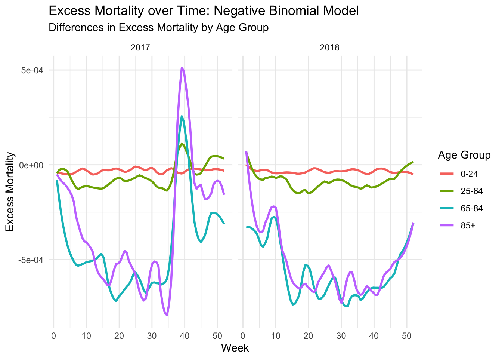
Question 5: Comparison of NYT Data and excessmort Data
pdf_url <- "https://github.com/c2-d2/pr_mort_official/raw/master/data/Mortalidad-RegDem-2015-17-NYT-part1.pdf"
# Download PDF to a temporary file
temp_file <- tempfile(fileext = ".pdf")
download.file(pdf_url, temp_file, mode = "wb")
# extract text from PDF
pdf_text_data <- pdf_text(temp_file)
# view first page of pdf file
cat(pdf_text_data[1])12/6/2017 Registro Demográfico - División de Calidad y Estadísticas Vitales
16-17
SEP Y2015 Y2016 Y2017 Diff.
1 75 75 92 17
2 77 67 69 2 Defunciones Ocurridas en Septiembre por Día y Año
3 67 78 78 0
140
4 71 99 84 -15
5 62 89 75 -14
120
6 77 74 80 6
7 85 67 87 20
100
8 84 77 93 16
9 79 90 72 -18
10 66 73 98 25 80
11 92 78 92 14
12 79 66 77 11 60
13 81 88 100 12
14 70 81 80 -1 40
15 87 91 83 -8
16 70 71 77 6 20
17 70 68 85 17
18 76 79 77 -2 0
19 81 82 74 -8 1 2 3 4 5 6 7 8 9 10 11 12 13 14 15 16 17 18 19 20 21 22 23 24 25 26 27 28 29 30
20 69 79 100 21
Registro Demográfico - División de Calidad y Estadísticas Vitales Y2015 Y2016 Y2017
21 70 67 120 53
22 68 97 110 13
23 70 71 109 38
24 78 79 120 41
25 60 75 135 60
26 76 82 131 49
27 78 82 120 38
28 84 81 109 28
29 83 70 127 57
30 73 91 129 38
Total 2258 2367 2883 516
Avg 75 79 96 Avg Sep 1-19, 2017 83 Dif. 16vs17 80
Max 92 99 135 Avg Sep 20-30,2017 119 Dif. 16vs17 436
Min 60 66 69
Med 76 79 92 NOTA:
AveD 6.18 7.10 17.25 *Y2017 - Certificados de Defunción registrados en sistema del RD hasta: 12/6/2017